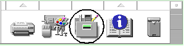
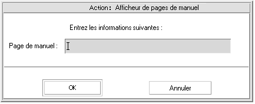
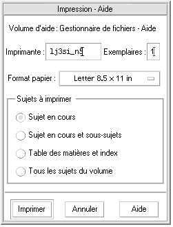

L'aide en ligne est disponible pour chaque application standard du Bureau CDE. Que vous utilisiez le Gestionnaire de fichiers, l'Agenda ou la Messagerie, par exemple, vous demandez et affichez les rubriques d'aide de la même façon. Vous pouvez également consulter des informations d'aide par l'intermédiaire du Gestionnaire d'aide du Bureau.
Les autres applications installées sur le Bureau peuvent également faire appel au système d'aide du Bureau ou utiliser leur propre système d'aide en ligne.
Demande d'aide44 |
||||||||||||||||||||||||||||||||||||||||
Utilisation des fenêtres d'aide48 |
||||||||||||||||||||||||||||||||||||||||
Sélection des sujets d'aide49 |
||||||||||||||||||||||||||||||||||||||||
Déplacement entre les sujets d'aide51 |
||||||||||||||||||||||||||||||||||||||||
Recherche d'informations spécifiques56 |
||||||||||||||||||||||||||||||||||||||||
Consultation de l'aide sur le système58--> Vous pouvez invoquer l'aide de différentes façons:
F1
|
Généralités |
Affiche le sujet initial de l'application. Il s'agit du premier niveau de la hiérarchie des aides de l'application. |
Table des matières |
Liste toutes les rubriques de la hiérarchie des rubriques de l'aide de l'application. |
Tâches |
Affiche des instructions pour la plupart des opérations possibles avec l'application concernée. |
Référence |
Affiche une présentation de différents éléments, tels que les fenêtres, les boîtes de dialogue, les menus et les ressources de l'application. |
Sur l'élément |
Permet de cliquer sur un élément dans une fenêtre quelconque de l'application et d'afficher une description de l'élément. |
Aide sur l'aide |
Fournit de l'aide sur l'utilisation des fenêtres d'aide. |
À propos de... |
Affiche la version et le copyright de l'application. |
Les applications peuvent présenter d'autres options d'aide. Il en est de même des menus d'aide des applications non-CDE.
L'aide Sur l'élément est interactive. Elle permet de positionner le pointeur de la souris sur un élément donné (menu, bouton ou boîte de dialogue) et de cliquer dessus afin d'afficher l'aide correspondante.
Sélectionnez Sur l'élément dans le menu Aide.
Le pointeur se transforme en ? (point d'interrogation).
Amenez-le sur un élément de l'application et cliquez sur le bouton gauche de la souris.
Une description de l'élément s'affiche.
Le Gestionnaire d'aide est un volume d'aide spécial qui répertorie toute l'aide en ligne installée sur le système. Cliquez sur son icône dans le Tableau de bord pour ouvrir le volume d'aide correspondant.
Cliquez sur l'un des titres soulignés pour consulter les informations d'aide correspondantes. Pour obtenir des instructions supplémentaires sur l'utilisation du Gestionnaire d'aide, reportez-vous à la section Le Système d'aide est intégré à chaque application du Bureau CDE (et éventuellement à d'autres applications installées sur le système). Lorsque vous demandez de l'aide sur une application en cours, cette dernière affiche une fenêtre d'aide.
Les applications peuvent utiliser deux types de fenêtres d'aide
pour afficher les rubriques d'aide: une fenêtre d'aide générale et une fenêtre d'aide rapide, ( Figure 3‐4
Les fenêtres d'aide générale comportent une arborescence des sujets disponibles. Lorsque vous sélectionnez une rubrique, celle-ci s'affiche dans la partie inférieure de la fenêtre d'aide appelée zone d'affichage de rubrique.
Les fenêtres d'aide rapide sont des fenêtres d'aide simplifiées.Elles comportent uniquement une zone d'affichage des rubriques et un ou plusieurs boutons.
Vous pouvez sélectionner les rubriques d'aide de deux façons: soit dans l'arborescence des rubriques, soit par l'intermédiaire d'un hyperlien à l'intérieur d'une rubrique d'aide. On entend par hyperlienune phrase ou un mot actif qui permet d'afficher des informations complémentaires. Tout texte souligné dans une fenêtre d'aide est un hyperlien.
Des images graphiques peuvent également être utilisées comme hyperliens. Pour plus de détails, reportez-vous à la section
Pour vous déplacer entre les rubriques d'aide, utilisez les commandes ci-dessous (menu Naviguer):
Revenir |
Permet de retourner à la rubrique d'aide précédente. |
Historique |
Affiche la boîte de dialogue Historique qui liste les utilitaires et rubriques d'aide consultés. Sélectionnez une rubrique d'aide pour y retourner. |
Sujet initial |
Permet de revenir à la rubrique initiale ou au début du volume d'aide. |
Revenir et Historique existent également sous forme de boutons de fonction.
Dans une fenêtre d'aide générale, vous pouvez également utiliser le menu instantané Aide comme raccourci. Ce menu comporte les commandes Revenir et Sujet initial, qui sont fréquemment utilisées.
Les fenêtres d'aide rapide n'ont pas de menu instantané.
Positionnez le pointeur sur la zone d'affichage de la rubrique et appuyez sur le bouton droit de la souris.
Sélectionnez Revenir ou Sujet initial.
Chaque application qui fournit de l'aide en ligne possède un volume d'aide. Un volume est un groupe de rubriques d'aide qui décrit une application et explique comment utiliser ses fonctions.Par exemple, l'aide d'une application peut être structurée de manière à créer les rubriques suivantes: Concepts, Tâches et Référence.
La rubrique initiale correspond à la première rubrique ou au début du volume d'aide.Les rubriques de niveau principal sont généralement accessibles à partir du sujet initial. Elles peuvent également être listéessur le menu Aide de l'application.
Généralement, les hyperliens permettent de passer à une autre rubrique du volume d'aide de l'application. Lorsque vous consultez la rubrique Tâches, par exemple, vous pouvez sélectionner l'hyperlien d'un sujet de la rubrique Référence.
Un groupe d'applications associées peut cependant utiliser des hyperliens pour les références croisées entre les différents volumes d'aide. Par exemple, l'aide d'une application spécifique peut inclure un hyperlien du volume d'aide d'introduction au Bureau qui explique les connaissances de base requises par l'utilisation de la souris et du clavier.
Étant donné que les hyperliens peuvent vous mener rapidement d'une information à l'autre, il importe de savoir exactement où vous vous trouves. Un coup d'oeil rapide à la fenêtre d'aide vous fournit les informations nécessaires.
La ligne située sous la barre de menus indique le nom du volume d'aide en cours de consultation. Cette fonctionnalité se révèle fort utile lorsque vous explorez plusieurs volumes d'aide à l'aide du Gestionnaire d'aide, de l'index ou de liens intervolumes.
À l'intérieur de l'arborescence des rubriques, le premier élément est le sujet initial, ou début du volume d'aide. Après exploration des rubriques, vous pouvez facilement revenir à la rubrique initiale en retraçant vos pas dans l'arborescence.Vous pouvez également sélectionner Sujet initial dans le menu Naviguer ou dans le menu instantané.
Un symbole ˛ (flèche) pointe sur le titre de la rubrique actuelle. À la sélection de rubriques, la flèche se déplace pour identifier votre sélection. Pour savoir où vous vous trouvez, faites défiler l'arborescence des rubriques.
Une fenêtre d'aide générale maintient un historique des rubriques d'aide consultées. La commande Historique ouvre une boîte de dialogue qui liste les volumes et rubriques d'aide parcourus.
Cliquez sur le bouton Historique.
Sélectionnez le titre du volume ou dr la rubrique d'aide à afficher.
Cliquez sur Fermer lorsque vous avez fini.
À l'instar d'un livre, un volume d'aide possède un index qui liste les mots et phrases clés qui permettent de rechercher des rubriques d'aide.Vous pouvez parcourir ou consulter l'index du volume courant, des volumes sélectionnés ou de tous les volumes d'aide disponibles.
L'index d'aide risque d'être relativement conséquent, même pour un seul volume; par conséquent, les entrées d'index sont développées ou comprimées. Un signe + (plus) indique que l'entrée de l'index se rapporte à plusieurs rubriques d'aide. Le chiffre indique le nombre de rubriques d'aide. Vous pouvez cliquer sur l'entrée d'index pour afficher les rubriques connexes.
Par exemple, le résultat de la recherche du mot "écran"
dans l'index est illustré à la Figure 3‐10
L'index de l'aide n'est disponible que dans une fenêtre d'aide générale.
Cliquez sur le bouton Index.
L'index liste toutes les entrées du volume d'aide en cours. Vous pouvez sélectionner l'option Tous les volumes pour afficher l'index de tous les volumes d'aide disponibles, ou l'option Sélectionnés si vous préférez ne voir apparaître que certains volumes.
Sélectionnez la zone Entrées comportant, tapez le mot ou la phrase à rechercher et appuyez sur Entrée.
La recherche traite indifféremment les majuscules et minuscules.
Les caractères génériques tels que l'astérisque
(*) et le point d'interrogation (?) peuvent être utilisés (reportez-vous
à la section “Schémas de recherche
Sélectionnez l'entrée d'index à visualiser.
Si l'entrée est précédée du préfixe + (signe plus), la liste peut être développée pour afficher d'autres possibilités. Sélectionnez ensuite une rubrique d'aide à consulter.
Affichez autant de rubriques que vous le souhaitez.
Cliquez sur Fermer lorsque vous avez terminé votre recherche.
Dans un schéma de recherche, certains caractères (appelés "génériques") ont une signification spéciale. Vous pouvez combiner ces caractères de différentes façons.
Deux caractères génériques fréquemment utilisés sont l'astérisque (*) et le point d'interrogation (?). * représente une chaîne de caractères (y compris zéro caractère) et ? correspond à un caractère. Les autres caractères génériques sont:
. (point) |
Représente un caractère quelconque. |
| (barre verticale) |
Spécifie deux schémas de recherche et correspond aux deux (OU logique). |
() (parenthèses) |
Encadrent une expression. |
Pour rechercher dans une expression régulière un caractère ayant une signification particulière, faites-le précéder de \ (barre oblique inversée).
souris.*clic |
Recherche les entrées contenant le mot "souris" suivies d'un certain nombre de caractères, puis de "clic". |
souris | clic |
Recherche les entrées contenant le mot "souris" ou "clic". |
Gestionnaire.*(session | configuration) |
Recherche les entrées contenant "Gestionnaire de sessions" ou "Gestionnaire de configuration". |
Vous pouvez consulter tous les volumes d'aide des applications installées sur le système sans lancer ces dernières — il vous suffit de lancer le Gestionnaire d'aide à partir du Tableau de bord.
Au niveau supérieur, le Gestionnaire d'aide regroupe les volumes d'aide en familles d'aide. Par exemple, la famille d'aide Bureau CDE répertorie les volumes d'aide des applications standard du Bureau. Vous pouvez consulter et afficher tous les volumes répertoriés.
Cliquez sur l'icône Gestionnaire d'aide du Tableau de bord (reportez-vous à la Figure 3‐2, page 46).
Une fenêtre affiche la liste des familles d'aide en ligne. Il s'agit du niveau supérieur du Gestionnaire d'aide.
Faites défiler la fenêtre pour rechercher le groupe de produits qui vous intéresse et cliquez sur son titre (souligné).
La liste des volumes d'aide disponibles pour ce produit s'affiche alors.
Pour ouvrir un volume d'aide donné, cliquez sur son titre (texte souligné).
Pour revenir au niveau supérieur du Gestionnaire d'aide, cliquez sur le bouton Niveau supérieur.
Pour consulter l'aide en ligne du Gestionnaire de fichiers:
Cliquez sur l'icône Gestionnaire d'aide.
Sélectionnez Bureau CDE.
Faites défiler la liste des volumes d'aide jusqu'à Gestionnaire de fichiers - Aide.
Cliquez sur cet hyperlien.
L'aide pour le Gestionnaire de fichiers s'affiche. Il s'agit des mêmes informations d'aide que celles qui s'affichent lorsque vous ouvrez le Gestionnaire de fichiers et que vous sélectionnez Généralités sur le menu Aide.
Sélectionnez Nouvelle fenêtre dans le menu Fichier du Gestionnaire d'aide.
La fenêtre d'aide courante est copiée. Vous pouvez dimensionner la nouvelle fenêtre et sélectionner les sujets indépendamment de la fenêtre d'origine.
Pour quitter la fenêtre, sélectionnez Fermer dans le menu Fichier.
L'option Nouvelle fenêtre est uniquement disponible dans la fenêtre d'aide du Gestionnaire d'aide (reportez-vous à la section
Les pages de références au manuel, généralement appelées “pages de manuel”, peuvent être affichées à l'aide de l'action Afficheur de pages de manuel. L'icône d'action est située dans le dossier Applications_Bureau du Gestionnaire d'applications.
Cliquez sur l'icône Gestionnaire d'applications du Tableau de bord.
Cliquez deux fois sur l'icône Applications_Bureau.
Cliquez sur l'icône de l'afficheur de pages de manuel.
Une boîte de dialogue vous invite à entrer le nom d'une page de manuel.
Entrez le nom de la page à visualiser et appuyez sur Entrée.
Cette page s'affiche dans une fenêtre d'aide rapide.
Cliquez sur Fermer pour fermer la page de manuel.
Il vous arrive probablement d'avoir besoin de l'imprimé d'une rubrique d'aide d'application donnée. Vous pouvez imprimer un sujet, une table des matières et un index ou un volume d'aide complet. Les options d'impression telles que la taille du papier, le nombre d'exemplaires et l'imprimante cible peuvent également être définies dans la boîte de dialogue Imprimer.
Les rubriques d'aide imprimées sont dirigées vers l'imprimante par défaut à moins que vous n'ayez indiqué un nom différent dans la boîte de dialogue. La sortie imprimée comporte uniquement du texte.
Sélectionnez Imprimer dans le menu Fichier. Dans une fenêtre d'aide rapide, cliquez sur le bouton Imprimer.
Vous pouvez utiliser les valeurs par défaut de la boîte de dialogue Imprimer et passer directement à l'étape 5 ou entrer de nouvelles valeurs pour le travail d'impression.
Facultatif. Entrez le nom de l'imprimante à utiliser.
Facultatif. Tapez le nombre d'exemplaires à imprimer.
Facultatif. Cliquez sur le bouton Taille du papier pour sélectionner un format de papier.
Sélectionnez la ou les rubriques à imprimer.
Sujet en cours (valeur par défaut) |
Imprime uniquement la rubrique en cours. |
Sujet en cours et sous-sujets |
Imprime la rubrique actuelle et ses sous-rubriques. |
Table des matières et index |
Imprime la table des matières et l'index du volume d'aide. |
Tous les sujets du volume |
Imprime le contenu du volume d'aide, y compris la table des matières et l'index. |
Cliquez sur Imprimer.
La boîte de dialogue Imprimer affiche le nom de l'imprimante par
défaut. Vous pouvez modifier le nom de cette imprimante en éditant
la valeur de la variable de l'environnement
Éditez votre fichier
Si le fichier .Xdefaults n'existe pas, créez-le dans votre répertoire personnel.
Vous voulez imprimer toutes les rubriques d'aide de l'application ImageScan
sur une imprimante appelée
Ajoutez cette ressource au fichier .Xdefaults:
Vous pouvez modifier les couleurs de l'arborescence ou de la zone d'affichage des sujets d'une application en définissant des ressources. Il est très important de choisir des couleurs contrastées. Cela garantit que le texte (couleur de premier plan) sera visible sur la couleur d'arrière-plan.
Éditez votre fichier
Substituez à
Pour obtenir la liste de couleurs disponibles, faites appel à l'administrateur système ou reportez-vous à la documentation du système.
Sauvegardez et fermez le fichier.
Lorsque vous relancerez l'application, celle-ci utilisera les nouvelles couleurs pour l'arborescence et les zones d'affichage des rubriques de ses fenêtres d'aide.
Ces entrées de ressources modifient les couleurs d'avant- et d'arrière-plan de l'arborescence (TocArea) et de la zone d'affichage des sujets (DisplayArea) de l'application DtCardCatalog.
Étant donné que les fenêtres d'aide rapide ne contiennent
pas d'arborescence, la ressource